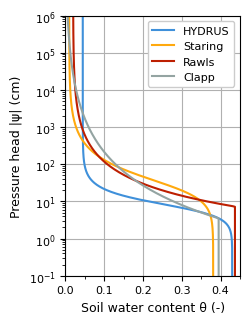
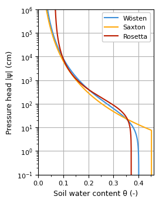
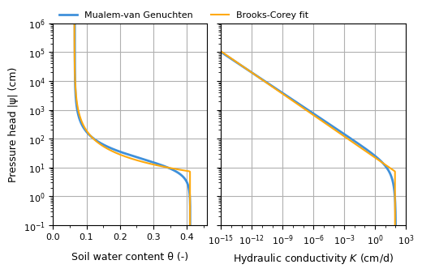

Article for Journal of Open Source Software¶
Martin Vonk & Aaron Peche (2026)
This notebook replicates the results presented in the article submitted to the Journal of Open Source Software (JOSS). The article can be found here: https://joss.theoj.org/papers/095927c33334e8ebb4612243ea40fdae doi.org/…
JOSS is a developer-friendly, open-access academic journal (ISSN 2475-9066) dedicated to research software packages and features a formal peer-review process. The pre-review and review of the Pedon package are publicly available in issues https://github.com/openjournals/joss-reviews/issues/9769 and https://github.com/openjournals/joss-reviews/issues/10409, respectively.
Setup¶
[1]:
from pathlib import Path
import matplotlib as mpl
import matplotlib.pyplot as plt
import matplotlib.ticker as mplticker
import numpy as np
from cycler import cycler
import pedon as pe
rc_params = {
"axes.prop_cycle": cycler(
color=[
"#3f90da",
"#ffa90e",
"#bd1f01",
"#94a4a2",
"#832db6",
"#a96b59",
"#e76300",
"#b9ac70",
"#717581",
"#92dadd",
]
),
"axes.titlesize": 10.0,
"axes.grid": True,
"axes.labelsize": 9.0,
"xtick.labelsize": 8.0,
"ytick.labelsize": 8.0,
"legend.fontsize": 8.0,
"legend.framealpha": 1.0,
"figure.figsize": [7.0, 6.0],
}
mpl.rcParams.update(rc_params)
fig_path = Path.cwd().parent.parent / "paper/figures"
Defining a soil model¶
[2]:
# Mualem-van Genuchten parameters for Sandy Loam
mg = pe.Genuchten(
k_s=106.1, # saturated conductivity (cm/d)
theta_r=0.065, # residual water content (-)
theta_s=0.41, # saturated water content (-)
alpha=0.075, # shape parameter (1/cm)
n=1.89, # shape parameter (-)
)
h = np.logspace(-1, 6, 8) # pressure head (cm)
theta = mg.theta(h) # water content (-) at pressure head values
k = mg.k(h) # hydraulic conductivity (cm/d) at pressure head values
[3]:
np.array(list(zip(h, theta, k)))
[3]:
array([[1.00000000e-01, 4.09984348e-01, 1.03389137e+02],
[1.00000000e+00, 4.08791540e-01, 8.59093947e+01],
[1.00000000e+01, 3.43096726e-01, 1.34676049e+01],
[1.00000000e+02, 1.21823289e-01, 4.55156715e-03],
[1.00000000e+03, 7.23953055e-02, 2.81336545e-07],
[1.00000000e+04, 6.59528265e-02, 1.67662224e-11],
[1.00000000e+05, 6.51227480e-02, 9.98706595e-16],
[1.00000000e+06, 6.50158130e-02, 5.94891489e-20]])
Loading soil models from dataset¶
[4]:
hydrus = pe.Soil("Sand").from_name(pe.Genuchten, source="HYDRUS")
staring = pe.Soil("B05").from_name(pe.Genuchten, source="Staring_2018")
rawls = pe.Soil("Sand").from_name(pe.Brooks, source="Rawls")
clapp = pe.Soil("Sand").from_name(pe.Campbell, source="Clapp")
[5]:
fig, ax = plt.subplots(figsize=(2.6, 3.35), layout="tight")
pe.plot.swrc(hydrus.model, label="HYDRUS", ax=ax)
pe.plot.swrc(staring.model, label="Staring", ax=ax)
pe.plot.swrc(rawls.model, label="Rawls", ax=ax)
pe.plot.swrc(clapp.model, label="Clapp", ax=ax)
ax.set_ylim(1e-1, 1e6)
ax.set_xlim(0.0, 0.45)
ax.set_xticks(np.arange(0.0, 0.5, 0.05), minor=True)
ax.legend(ncol=1, loc="upper right", frameon=True)
# ax.set_title("Sand SWRC from different sources")
ax.set_ylabel("Pressure head |\N{GREEK SMALL LETTER PSI}| (cm)")
ax.set_xlabel("Soil water content \N{GREEK SMALL LETTER THETA} (-)")
fig.savefig(fig_path / "dataset_swrc.png", dpi=300, bbox_inches="tight")

Obtaining a soil model from pedotransfer function and databases¶
[6]:
# Create a soil sample with easily measured properties. Note that
# not all pedotransfer functions require all of these properties,
# but this is a common set that covers most cases.
ss = pe.SoilSample(
sand_p=60.0, # sand (%)
silt_p=30.0, # silt (%)
clay_p=10.0, # clay (%)
om_p=2.5, # organic matter (%)
rho=1.5, # bulk density (g/cm3)
)
# Estimate van Genuchten parameters using Wösten (HYPRES)
wosten: pe.Genuchten = ss.wosten()
# Estimate van Genuchten parameters using Rosetta v3
# Optional dependency requiring installation of `httpx`
rosetta: pe.Genuchten = ss.rosetta(version=3)
# Estimate Brooks-Corey parameters using Saxton
saxton: pe.Brooks = ss.saxton()
[7]:
fig, ax = plt.subplots(figsize=(2.6, 3.35), layout="constrained")
pe.plot.swrc(wosten, label="Wösten", ax=ax)
pe.plot.swrc(saxton, label="Saxton", ax=ax)
pe.plot.swrc(rosetta, label="Rosetta", ax=ax)
ax.set_ylim(1e-2, 1e6)
ax.set_xlim(0.0, 0.46)
ax.xaxis.set_minor_locator(mplticker.MultipleLocator(0.05))
ax.xaxis.set_major_locator(mplticker.MultipleLocator(0.1))
ax.legend(ncol=1, loc="upper right", frameon=True)
ax.set_ylim(1e-1, 1e6)
# ax.set_title("SWRC from pedotransfer functions")
ax.set_ylabel("Pressure head |\N{GREEK SMALL LETTER PSI}| (cm)")
ax.set_xlabel("Soil water content \N{GREEK SMALL LETTER THETA} (-)")
fig.savefig(fig_path / "ptf_swrc.png", dpi=300, bbox_inches="tight")

[8]:
# Estimate parameters using HYPAGS
ks = 1e-3 # saturated hydraulic conductivity (m/s)
hypags: pe.Genuchten = pe.SoilSample(k=ks).hypags()
[9]:
# pe.plot.curves(hypags, label="HYPAGS")
hypags
[9]:
Genuchten(k_s=0.001, theta_r=0.105, theta_s=np.float64(0.30896365527138614), alpha=np.float64(9.439965924107144), n=np.float64(1.3453214358373247), l=0.5)
Fitting a soil model¶
[10]:
# Fitting a Brooks-Corey soil model to existing Mualem-van Genuchten soil model
bcf = pe.SoilSample(h=h, theta=theta, k=k).fit(pe.Brooks)
[11]:
fig, axes = plt.subplots(
ncols=2, figsize=(5.2, 3.35), layout="tight", sharey=True, width_ratios=[1.0, 1.2]
)
axes = pe.plot.curves(mg, axes=axes, linewidth=2.0, label="Mualem-van Genuchten")
axes = pe.plot.curves(bcf, axes=axes, linewidth=1.5, label="Brooks-Corey fit")
axes[0].set_xlim(0.0, 0.46)
axes[0].xaxis.set_minor_locator(mplticker.MultipleLocator(0.05))
axes[0].xaxis.set_major_locator(mplticker.MultipleLocator(0.1))
axes[1].set_ylim(h[0], h[-1])
xt1 = np.logspace(-15, 3, 19)
axes[1].set_xlim(xt1[0], xt1[-1])
log_locator = mplticker.LogLocator(base=10.0, subs=(1.0,), numticks=20)
axes[1].xaxis.set_minor_locator(log_locator)
axes[1].xaxis.set_minor_formatter(mplticker.NullFormatter())
axes[0].set_ylabel("Pressure head |\N{GREEK SMALL LETTER PSI}| (cm)")
axes[0].set_xlabel("Soil water content \N{GREEK SMALL LETTER THETA} (-)")
axes[1].set_ylabel("")
axes[1].set_xlabel("Hydraulic conductivity $K$ (cm/d)")
handles, labels = axes[0].get_legend_handles_labels()
fig.legend(
handles,
labels,
bbox_to_anchor=(0.13, 0.92),
loc="lower left",
ncol=2,
frameon=False,
)
fig.tight_layout(w_pad=0.1)
fig.align_xlabels()
fig.savefig(fig_path / "fit_swrc_hcf.png", dpi=300, bbox_inches="tight")
